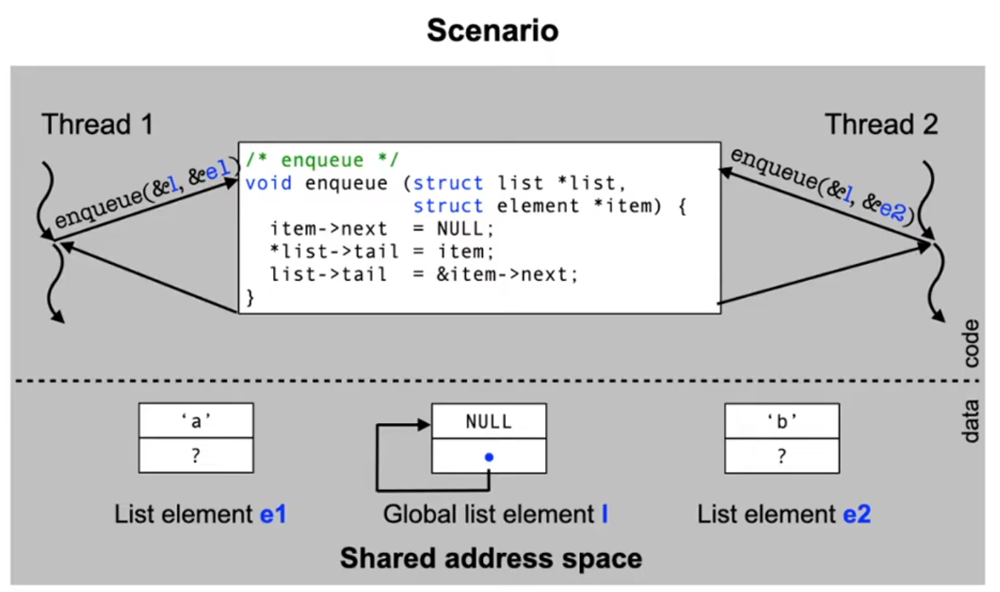
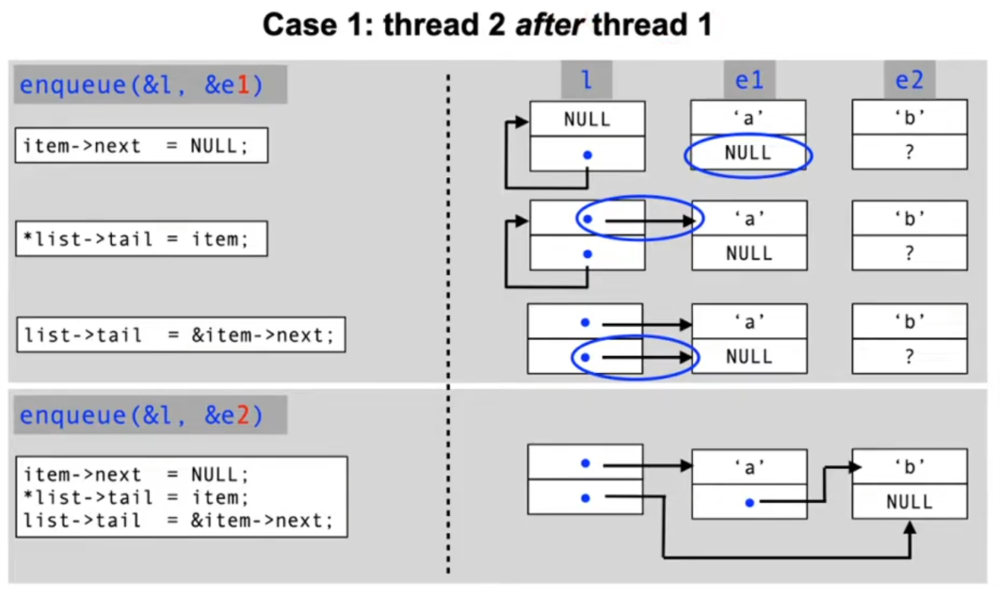
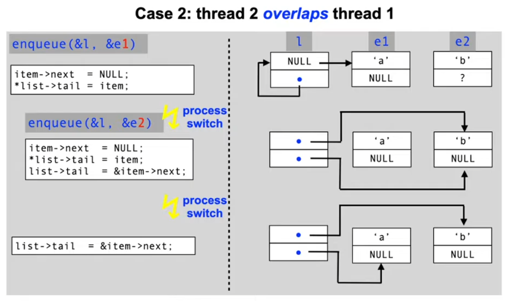
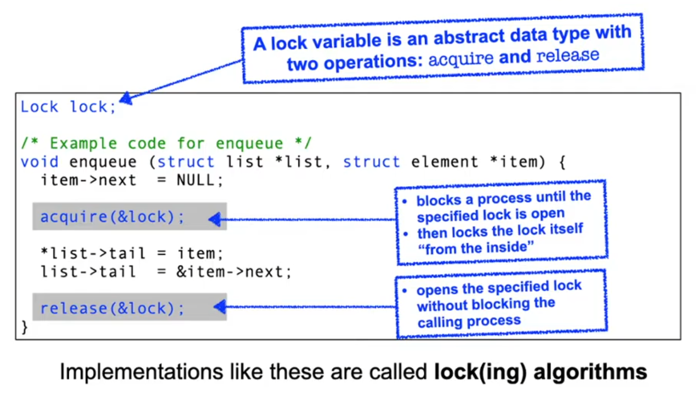

↩️ vault/public
Lecture 6, part 1: Syncronization and active waiting
<iframe width="560" height="315" src="https://www.youtube.com/embed/kgPB1z1WUwo" title="YouTube video player" frameborder="0" allow="accelerometer; autoplay; clipboard-write; encrypted-media; gyroscope; picture-in-picture" allowfullscreen
</iframe>
<iframe width="560" height="315" src="https://www.youtube.com/embed/2hyLFdZhDEI" title="YouTube video player" frameborder="0" allow="accelerometer; autoplay; clipboard-write; encrypted-media; gyroscope; picture-in-picture" allowfullscreen
</iframe>
Exam
Interaction of parallel activities, the resulting problems and solutions
Important questions:
- What is shared data/memory communication, why is it problematic?
- Can you give an example of a problematic situation?
- Can you understand multithreaded code using shared data?
- What is a race condition (can you give examples)?
- Why are race conditions hard to detect and debug?
- What is synchronization used for, which options for synchronization exist?
- Can you define the term "critical section"?
- What are locks and how are they used?
- Can you give details on lock implementations (atomic operations, suppressing interrupts, semaphores)?
- What is a semaphore, which operations exists on semaphores?
- Can you define the use and implementation of semaphores?
- Can you describe problems (e.g. reader/writer) solved using semaphores?
- What are monitors and how to they differ from semaphore solutions?
Example: Shared data
A simple linked list implementation in C:
/* Data type for list elements */
struct element {
char payload; /* the data to be stored */
struct element *next; /* pointer to next list element */
};
/* Data type for list administration */
struct list {
struct element *head; /* first element */
struct element **tail; /* 'next' pointer in last element */
};
/* Function to add a new element to the end of the list */
void enqueue (struct list *list, struct element *item) {
item->next = NULL;
*list->tail = item;
list->tail = &item->next;
}



Where does this problem occur?
- Shared memory used to communicate between processes
- Systems with a shared memory device
- Threads and fibers
- Concurrent access to the same variable
- Operating system data which are used to coordinate access of processes to non-divisible resources
- File system structures, process table, memory management, ..
- Devices (terminals, printers, network interfaces)
- Similar special case: interrupt synchronization
- Caution: methods that work for synchronizing processes do not necessarily work for inte
The problem: race conditions
- A race condition is a situation in which multiple processes access shared data concurrently and at least one of the processes manipulates the data.
- When a race condition occurs, the resulting value of the shared data is dependent on the order of access by the processes
- The result is therefore not predictable and can also be incorrect in case of overlapping accesses!
- To avoid race conditions, concurrent processes need to be synchronized
Synchronization
- The coordination of processes is called synchronization
- Creates an order for the activities of concurrent processes
- Thus, on a global level, synchronization enables the sequentiality of activities
Critical section
- In the case of race condition, N processes compete for the access to shared data
- The code fragments accessing the critical data are called critical sections
- Problem
- We need to ensure that only a single process can be in the critical section at the same time
Solution: lock variables

Implementing locks: the incorrect way
/* Lock variable (initial value is 0) */
typedef unsigned char Lock;
/* enter the critical section */
void acquire (Lock *lock) {
while (*lock); /* note: empty loop body! */
*lock = 1;
}
/* leave the critical section */
void release (Lock *lock) {
*lock = 0;
}
This naïve lock implementation does not work!
acquiremust protect a critical section – but it is critical itself!- the critical moment is the point in time after leaving the waiting loop and before setting the lock variable!
- If the current process is preempted between the two lines of code, another process sees the critical section as free and would also enter!
A working solution: "bakery" algorithm
- A process takes a waiting number (ticket) before it is allowed to enter the critical section
- Admission in order of the waiting numbers
- i.ie. the process with the lowest number is allowed to enter the critical section when the section is free
- When leaving the critical section, its waiting number is invalidated
- Problem
- The algorithm cannot guarantee that a waiting number is only given to one process
- In this case, a process ID (0..N-1) decides about the priority
typedef struct { /* lock variables (initially all 0) */
bool choosing[N]; int number[N];
} Lock;
void acquire (Lock *lock) { /* enter critical section */
int j; int i = pid();
lock->choosing[i] = true;
lock->number[i] = max(lock->number[0], ...number[N-1]) + 1;
lock->choosing[i] = false;
for (j = 0; j < N; j++) {
while (lock->choosing[j]);
while (lock->number[j] != 0 &&
(lock->number[j] < lock->number[i] ||
(lock->number[j] == lock->number[i] && j < i)));
}
}
void release (Lock *lock) { /* leave critical section */
int i = pid(); lock->number[i] = 0;
}
Discussion: bakery algorithm
The bakery alogrithm is a provably correct solution for the problem of critical sections, but:
- in most cases, it is not known beforehand how many processes will compete to enter a critical section
- process IDs are not necessarily in a range 0..N-1
- the
aquirefunction has a long runtime even in case where the critical section is already free O(N)
Locks with atomic operations
Many CPUs support indivisible (atomic) read/modify/write cycles that can be used to implement lock algorithms
- We have to use special machine instructions for atomic operations, e.g.:
- Motorola 68K: TAS (test and set)
- Sets bit 7 of the destination operand and returns its previous state in the CPU's condition code bits
- Motorola 68K: TAS (test and set)
acquire TAS lock
BNE acquire
- Intel x86: XCHG (exchange)
- Exchanges the content of a register with that of a memory location (i.e. a variable in memory)
mov ax, 1
acquire xchg lock
cmp ax, 0
jne acquire
- ARM: LDREX/STREX (load/store exclusive)
- STREX checks if any write to the address has occured since the last LDREX
- More recent ARM CPUs (v8/v8.1) provide additional (better performing) atomic instructions
MOV r1, #0xFF
acquire LDREX r0, [LockAddr]
CMP r0, #0
STREXEQ r0, r1, [LockAddr]
CMPEQ r0, #0
BNE acquire
Discussion: active waiting
So far, our lock algorithms have a significant drawback. The actively waiting process
- is unable to change the condition it is waiting for on its own
- it unnecessarily impedes other processes which would be able to use the CPU for "useful" work
- it harms itself due to active waiting:
- The longer a process holds the processor, the longer it has to wait for other processes to fulfill the condition it is waiting for
- This problem does not occur in multi processor systems
Suppressing interrupts
What is the reason for a process switch inside a critical section?
- The operating system interferes (e.g. due to a process using too much CPU time) and moves another process to the RUNNING state
- This can only happen if the OS regains control
- A timer or device interrupt occurs
- Idea: disable interrupts to ensure a process can stay in the critical section!
/* enter critical section */
void acquire (Lock *lock) {
asm ("cli");
}
/* leave critical section */
void release (Lock *lock) {
asm ("sti");
}
cli and sti are used in Intel x86 processors to disable and enable the handling of interrupts.
Lecture 6, part 2: Passive waiting and monitors
Alternative: passive waiting
- Idea: processes release the CPU while they wait for events
- in the case of synchronization, a process "blocks itself" waiting for an event
- the process is entered into a waiting queue
- when the event occurs, one of the processes waiting for it is unblocked (there can be more than one waiting)
- in the case of synchronization, a process "blocks itself" waiting for an event
- The waiting phase of a process is realized as a blocking phase ("I/O burst")
- the process schedule is updated
- another process in state READY will be moved to state RUNNING (dispatching)
- what happens if no process is in READY at that moment?
- with the start of the blocking phase of a process, its CPU burst ends
Semaphores
- A semaphore is defined as a non-negative integer with two atomic operations:
- P (from Dutch "prolaag" = "decrement"; also down or wait)
- if the semaphore has the value 0, the process calling P is blocked
- otherwise, the semaphore value is decremented
- V (from Dutch "verhoog" = "increment"; also up or signal)
- a process waiting for the semaphore (due to a previous call to P) is unblocked
- otherwise, the semaphore is incremented by 1
- P (from Dutch "prolaag" = "decrement"; also down or wait)
- Semaphores are an operating system abstraction to exchange synchronization signals between concurrent processes
Example semaphore implementation
/* C++ implementation taken from the teaching OS OO-StuBS */
class Semaphore : public WaitingRoom {
int counter;
public:
Semaphore(int c) : counter(c) {}
void wait() {
if (counter == 0) {
Customer *life = (Customer*)scheduler.active();
enqueue(life);
scheduler.block(life, this);
}
else
counter--;
}
void signal() {
Customer *customer = (Customer*)dequeue();
if (customer)
scheduler.wakeup(customer);
else
counter++;
}
};
Using semaphores
Semaphore lock; /* = 1: use semaphore as lock variable */
/* Example code: enqueue */
void enqueue (struct list *list, struct element *item) {
item->next = NULL;
wait (&lock);
*list->tail = item;
list->tail = &item->next;
signal (&lock);
}
Semaphores: simple interactions
- One sided synchronization
/* shared memory */
Semaphore elem;
struct list l;
struct element e;
/* initialization */
elem = 0;
/* process 1 */
void producer() {
enqueue(&l, &e);
signal(&elem);
}
/* process 2 */
void consumer() {
struct element *x;
wait(&elem);
x = dequeue(&l);
}
- Resource oriented synchronization
/* shared memory */
Semaphore resource;
/* initialization */
resource = N; /* N > 1 */
/* the rest: same as with
mutual exclusion */
Semaphores: complex interactions
- Example: the first reader/writer problem
- As with mutual exclusion, a critical section also has to be protected in this example
- However, here we have two classes of concurrent processes:
- Writers: they change data and thus need a guarantee for mutual exclusion
- Readers: ther only read data, thus multiple readers are allowed to enter the critical section at the same time
/* shared memory */
Semaphore mutex;
Semaphore wrt;
int readcount;
/* initialization */
mutex = 1;
wrt = 1;
readcount = 0;
/* writer */
wait(&wrt);
// … write data …
signal(&wrt);
/* reader */
wait(&mutex);
readcount++;
if (readcount == 1)
wait(&wrt);
signal(&mutex);
// … read data …
wait(&mutex);
readcount--;
if (readcount == 0)
signal(&wrt);
signal(&mutex);
Semaphores: discussion
- Semaphore extensions and variants
- binary semaphore or mutex
- bon blocking wait()
- timeout
- arrays of counters
- Sources of errors
- risk of deadlocks (next lecture)
- difficult to implement more complex synchronization patterns
- cooperating processes depend on each other
- all of them must precisely follow the protocols
- use of semaphores is not enforces
- Support in programming languages
Language suppoert: monitors
- A monitor is an abstract data type with implicit synchronization properties:
- multilateral synchronization at the interface to the monitor
- mutual exclusion of the execution of all monitor methods
- unilateral synchronization inside of the monitors using condition variables
- wait blocks a process until a signal or condition occurs and implicitly releases the monitor again
- signal indicates that a signal or condition has occured an unblocks (exactly one or all) processes blocking on this event
- multilateral synchronization at the interface to the monitor
- Language-supported mechanism:
- Concurrent Pascal, PL/I, CHILL, .., Java
Monitors: example code
/* A synchronized queue */
monitor SyncQueue {
Queue queue;
condition not_empty;
public:
/* add an element */
void enqueue(Element element) {
queue.enqueue(element);
not_empty.signal();
}
/* remove an element */
Element dequeue() {
while (queue.is_empty())
not_empty.wait();
return queue.dequeue();
}
};
Signaling semantics in monitors
- In the case of waiting processes, a monitor has to fulfill the following requirements:
- at least one process waiting for the condition variable is deblocked, and
- at most one process continues to run after the monitor operation
- There are different solution approaches, each with its own semantics:
- Number of processes that are activated (all or only one)
- If only one, then which one?
- Possible conflict with CPU allocation
- Change of the monitor owner or no change
- If no immediate change of the owner takes place, the waiting condition has to be checked again
- If only one, then which one?
- Number of processes that are activated (all or only one)
Monitors in Java
synchronizedis a keyword indication mutual exclusion- One implicit condition variable
- notify or notifyAll instead of signal, no change of owner
/* A synchronized queue */
class SyncQueue {
private Queue queue;
/* add element */
public synchronized void enqueue(Element element) {
queue.enqueue(element);
notifyAll();
}
/* remove element */
public synchronized Element dequeue() {
while (queue.empty()) wait();
return queue.dequeue();
}
};
Conclusion
- Uncontrolled concurrent data access can lead to errors
- synchronization methods provide coordination
- Basically, one has to be careful when implementing these to ensure that the selection strategies do not contradict the OS scheduler decisions
- Ad hoc approach: active waiting
- Caution! Waste of compute time
- But: a short active wait is better than blocking, especially in multi processor systems
- Operating system-supported approach: semaphores
- Flexible (enables many different synchronization patterns), but error-prone
- Language-supported approach: monitors
- Less versatile compared to semaphores
- Expensive, since many context switches are required
- But monitors are a very safe approach